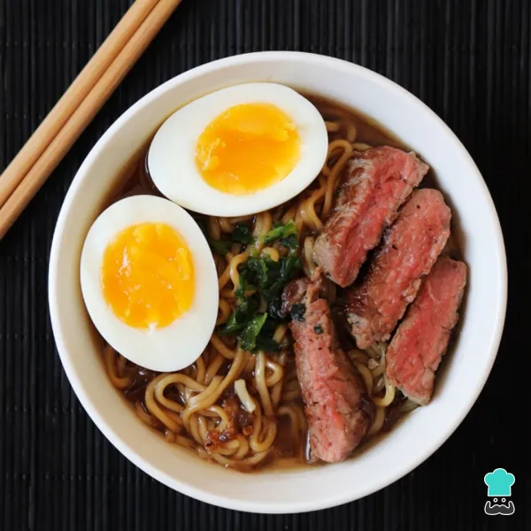

Oshi no Ko é uma série de mangá japonesa escrita por Aka Akasaka e ilustrada por Mengo Yokoyari.
Goro trabalha como ginecologista no interior, uma vida distante da indústria do entretenimento. Enquanto isso, sua idol favorita, Ai Hoshino, começou sua escalada para o estrelato. Os dois se encontram da "pior maneira possível", colocando as engrenagens do destino em movimento! Os incríveis Aka Akasaka e Mengo Yokoyari se unem para retratar o mundo do showbiz de uma perspectiva completamente nova nesta série chocante!
A versão encadernada pela Shueisha conta com 11 volumes até o momento
fonte: Crunchyroll

O lamen japones , tradicionalmente criado pelos Chineses , pode ser feito diversas formas , que consciste em 3 partes : um caldo , um macarrao japones de preferencia de arroz mas pode ser feito ate com miojo, e acompanhamentos , eu nao dispenso um ovo poche uma proteina,uma proteina e cebolinha e claro!
Ingredientes para o caldo
2 asas de frango
1 carre de porco
meia cebola cortada em 4
2 dentes de alho e um pedaco de gengibre
3 folhas de louro
3 colheres de shoyu
um tablete de caldo de bacon
1 colher (sopa) de salsinha ,coentro e cebolinha picadas
1 talo de alho poro
1 talo de aipo
sal e pimenta a gosto( se voce gostar apimentado sugiro por meio dedo de moca)
Ingredientes para lamen
o macarrao desejado ideal ,udon ou bifum
2 ovos
1 file de frango temperado a gosto
1 cenoura, cozida,cortada em retangulos
metade da cebola cortada em tiras
3 colheres de shoyu
Bacon cortado em retangulos
4 folhas cebolinha picadas
eo que voce reaproveitou do fundo do caldo
sal e pimenta a gosto
modo de preparo do caldo
Numa panela de pressao com 1litro de agua , cozinhe o frango e o porco , coando a gordura e as impurezas que vao boiar na agua fervente.Adicone os outros ingredientes ,tampe e deixe cozinha por meia hora depois que pegar pressao.Coe o caldo e reserve!
os restos da panela voce ve o que pode reaproveitar como a carne desossada que voce pode passar na frigideira para acrescentar no final
Modo de preparo do lamen
1. em uma panela , cozinhe seu macarrao desejado ao dente pq ele vai terminar de cozinhar no caldo
2. frite o bacon,a cebola e seu frango temperado e o resto da carne que sobrou do fundo do caldo enquanto voce cozinha seu ovos na tecnica que preferir,e o resto corte sua carne em tiras e reserve o frango , os ovos ,a cenoura
Cozinhe seu ovo eu gosto de ovo poche
3. em uma tigela acrescente o caldo que voce fez quente, e monte seu lamen
Eu gosto assim o lamen , espero que goste ! o link do ovo pocheovopoche